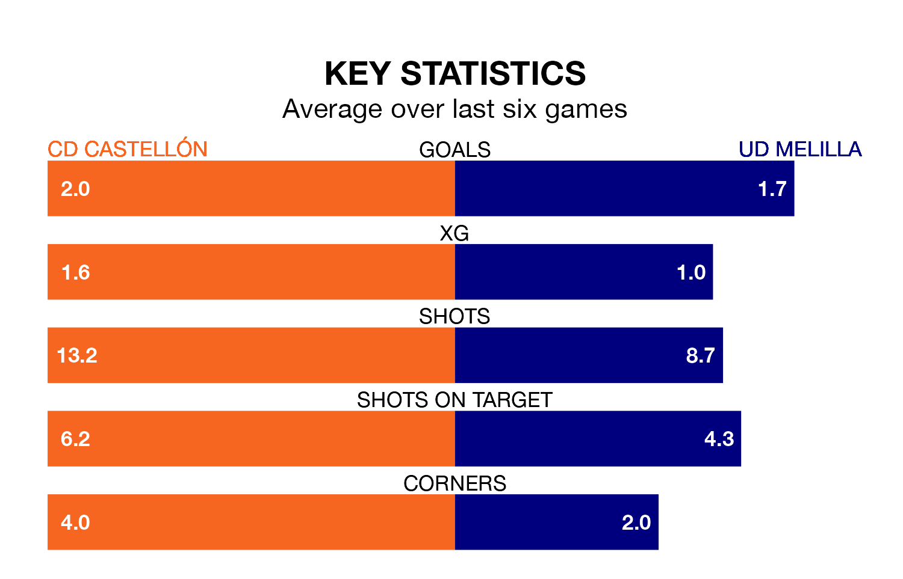

CD Castellón host UD Melilla in Sunday's early match at Nou Estadi Castalia looking to bounce back from defeat last time out in Primera Division RFEF Group 2.
Castellón, who sit top of the league after 33 games, fell to a 1-0 away defeat to Linares Deportivo on April 21.
They face a Melilla side who picked up a win in their last match, a 2-0 victory against Mérida AD, and who sit 18th in the table.
With 67 goals in 33 games so far this season, Castellón are the league's highest scorers with 2.0 goals per game. And they are conceding fewer than average, letting in 33 goals at a rate of 1.0 per game.
Melilla, meanwhile, are below average scorers, with 0.7 goals per game, compared to a league average of 1.1. They have conceded 1.5 goals per game.
In Jesús De Miguel Alameda, the home side have the league's most on-form striker so far this season. He has notched 15 goals in 23 appearances.
His goal rate of one every 128 minutes is much quicker than that of Daniel García Beltrán, the visitors' top scorer with a goal every 332 minutes, and a total of five goals in 22 games.
Castellón are in reasonable form in Primera Division RFEF Group 2, with four wins and two losses from their last six games.
With two wins and two draws over that period, Melilla's form is worse – they have taken eight points from 18, compared to Castellón's 12.
Updated: 07:59 (UTC), 26/04/24